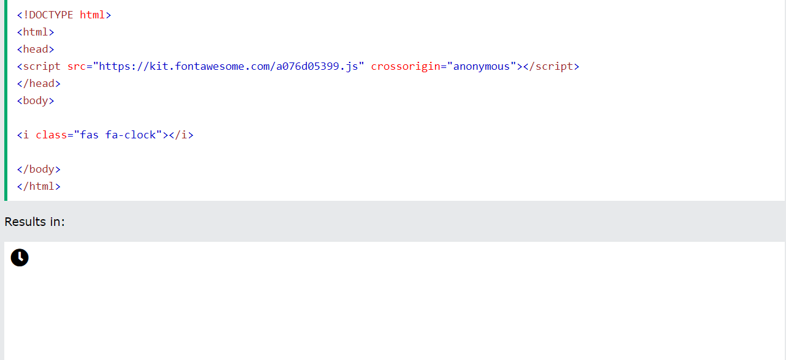
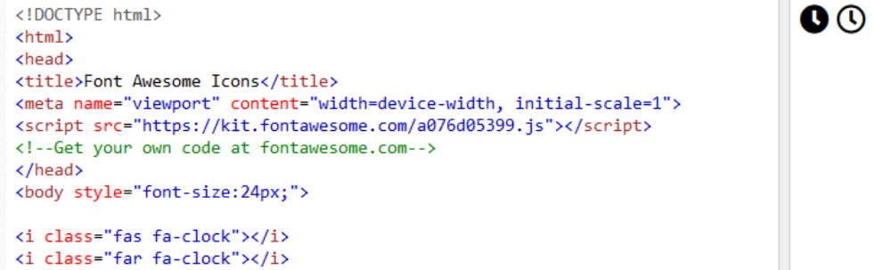
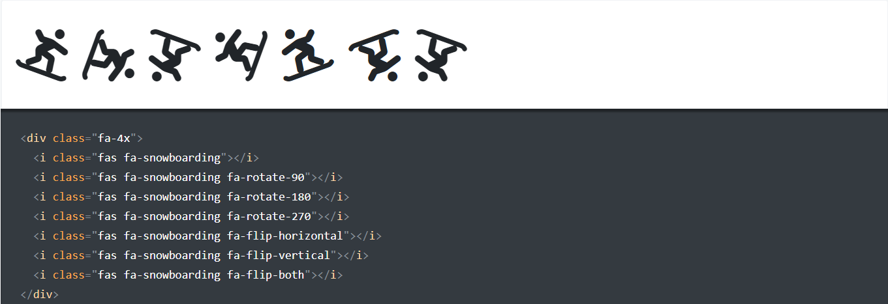
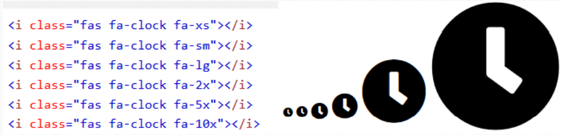

The simplest way to add an icon to your HTML page, is with an icon library, such as Font Awesome. Add the name of the specified icon class to any inline HTML element (like <i> or <span>).
All the icons in the icon libraries below, are scalable vectors that can be customized with CSS (size, color, shadow, etc.)
Font Awesome 5 has a PRO edition with 7020 icons, and a FREE edition with 1535 icons.
To use the Free Font Awesome 5 icons, you can choose to download the Font Awesome library, or you can sign up for an account at Font Awesome, and get a code (called KIT CODE) to use when you add Font Awesome to your web page.
Once you get the code you can start using Font Awesome on your web pages by
including only one line of HTML code:
<script src="https://kit.fontawesome.com/yourcode.js"> </script>
We got the code a076d05399 and by inserting the script tag, with the code, we can start using Font Awesome:
The s in fas stands for solid, and some icons also have a regular mode, specified by using the prefix far:
Sometimes you need to rotate, flip, or mirror an icon for it to work in your project or design. We’ve included some quick utilities to help with that.
To arbitrarily rotate and flip icons, use the fa-rotate-* and fa-flip-* classes when you reference an icon.
The fa-xs, fa-sm, fa-lg, fa-2x, fa-3x, …, fa-10x classes are used to adjust the icon sizes relative to their container.
Which of the following classes is used to rotate the icon?
Which class do we use to display the clock icon?
How many icons does Font Awesome 5 provide to premium users?